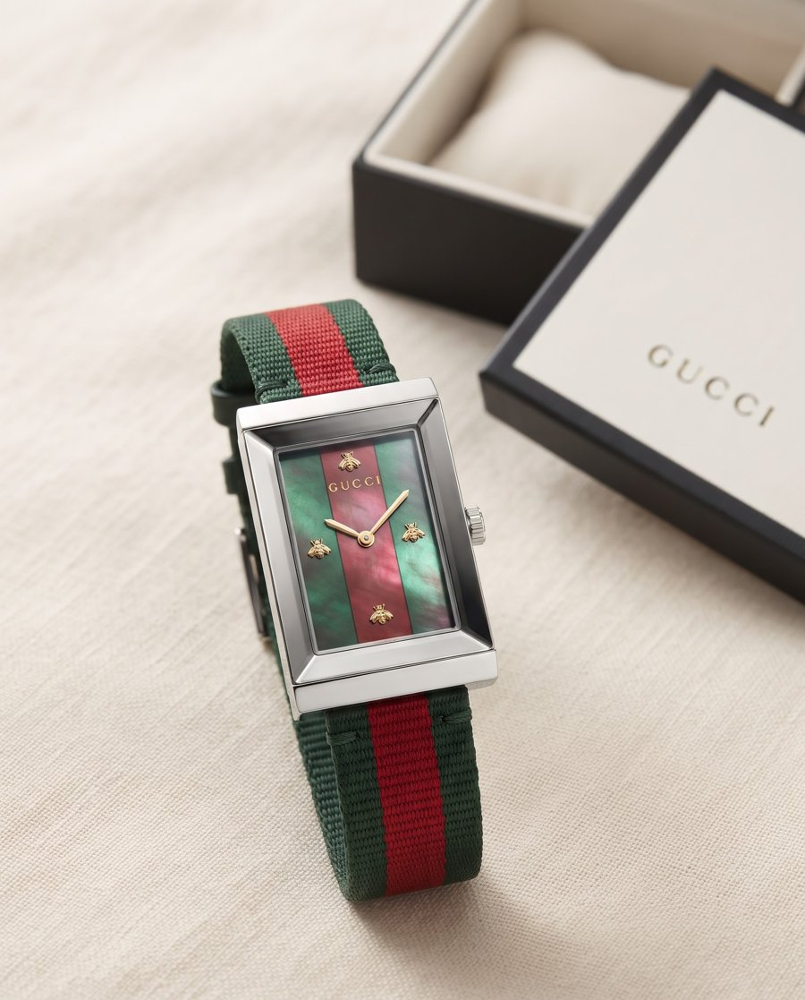
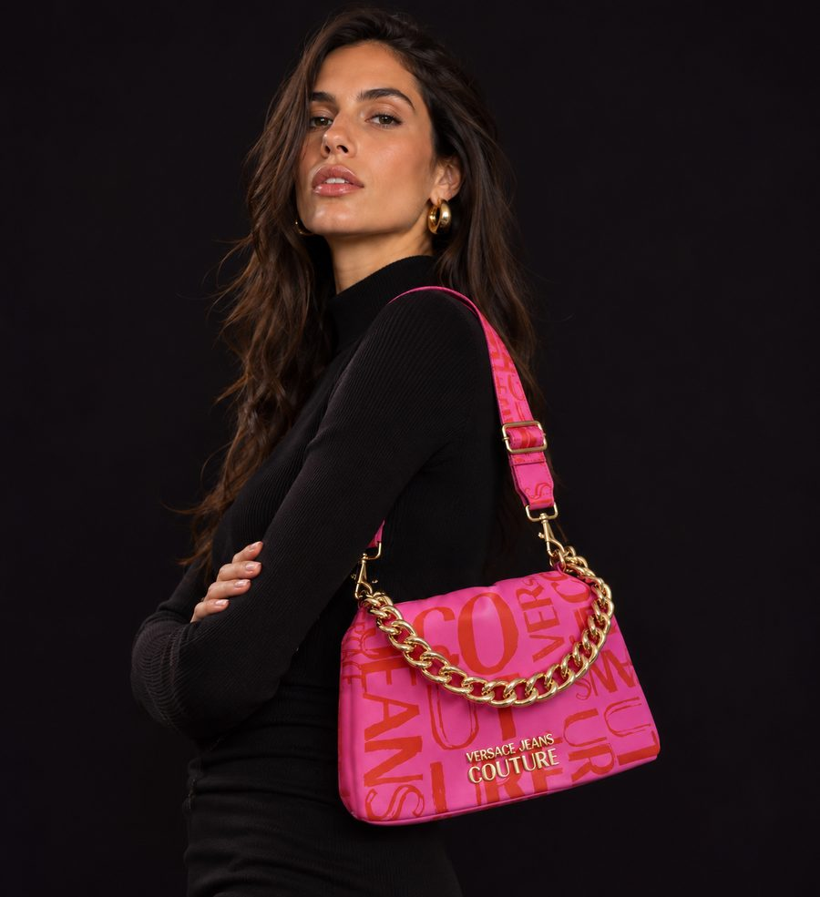
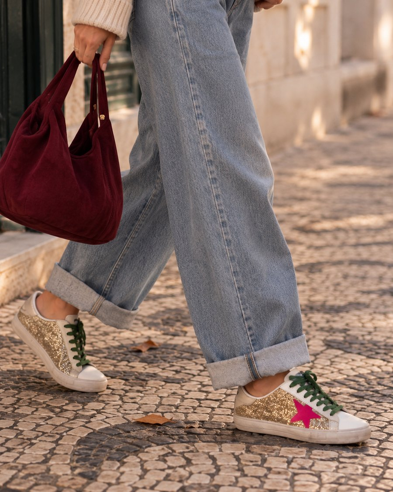

Carioca ex-assessora de imprensa de moda abre o próprio armário no Porto e cria um brechó de marcas com provador de inteligência artificial
Marianna Werneck trabalhou com assessoria de imprensa de moda e hoje trabalha com tecnologia. Juntou as duas coisas no Bendito Closet: um brechó online de marcas que construiu sozinha, com peças únicas a partir de 8 €, revista própria, quiz de estilo, jogos e um provador com inteligência artificial. Envio para toda a Europa.
Comunicado em PDF Comunicado em Word Ver a loja
Para a imprensa brasileira: o Bendito abre a vitrine para o Brasil
Novo: o Abra o seu closet, feito para quem mora no Brasil.
- Curadoria pessoal · a mulher manda fotos simples das peças pelo WhatsApp e escolhe com a Marianna até 5 peças de marca.
- Fotos com modelo · a Marianna cria as fotos e escreve as descrições de cada peça.
- Vitrine própria, em reais · uma página com o nome dela dentro do Bendito Closet, divulgada no Instagram da loja.
- Venda direta, por Pix · o botão "Comprar" abre o WhatsApp da dona do closet e a cliente paga direto a ela, com Pix ou como combinarem.
- 0% de comissão · o dinheiro das vendas é todo dela. Pacote de R$ 750 por até 5 peças, pago em reais, com Pix ou cartão.
Como funciona: benditocloset.pt/closet-brasil · Exemplo de closet: benditocloset.pt/closet-da-lu
A carioca Marianna Werneck, ex-assessora de imprensa de moda e há dez anos no Porto, criou sozinha o Bendito Closet, um brechó de marcas online com provador de inteligência artificial, quiz de estilo, jogo e revista próprios. Agora lança o Abra o seu closet: mulheres de todo o Brasil podem vender as suas peças de marca numa vitrine com curadoria, fotos com modelo e preços em reais, recebendo por Pix e sem comissão. benditocloset.pt/closet-brasil
O que há de novo (atualizado a 26 de novembro de 2026)
Tudo está no ar e a funcionar. O site não serve só para comprar: serve para brincar.
- Provador com inteligência artificial · a cliente escolhe uma foto sua e até 3 peças (roupa, sapatos, ténis ou malas) e, em cerca de 20 segundos por peça, vê-as vestidas no próprio corpo. Tecnologia de grande marca num brechó de uma pessoa só. benditocloset.pt/provador
- Qual é o seu estilo? · quiz de 5 perguntas com 5 perfis (Chique parisiense, Cool sem esforço, A noite é sua, Carioca de alma e Sporty luxe) e as peças do closet para cada um. benditocloset.pt/estilo
- Monta o look · a cliente escolhe as peças, põe a sua foto e vira capa de revista, pronta para o story. benditocloset.pt/monta-o-look
- Jogo da memória · encontrar os 8 pares de peças do closet dá 10% de desconto na primeira compra. benditocloset.pt/jogo-da-memoria
- Bendito Edit · revista digital mensal feita só com peças do closet, em português e em inglês. benditocloset.pt/revista
- Abra o seu closet · outras mulheres, incluindo do Brasil, podem pôr as suas peças na vitrine do Bendito, com curadoria e fotos da Marianna. benditocloset.pt/closet-brasil
- Crie a sua loja · a Marianna também cria este tipo de site e experiências para outras pequenas marcas. benditocloset.pt/lojas
Vídeo de apresentação (51 s)
Nota pronta, se servir
A carioca Marianna Werneck, ex-assessora de imprensa de moda e há dez anos no Porto, abriu o próprio armário e criou sozinha o Bendito Closet, um brechó online de marcas. Lá dentro há uma revista própria, um jogo em que a cliente vira capa de revista, um quiz que descobre o seu estilo e um provador com inteligência artificial que mostra a peça vestida em quem compra. Peças únicas, de Gucci a achados desde 8 €, em benditocloset.pt.
Novo: a revista Bendito Edit
Revista digital mensal com looks feitos só com peças do closet. Nº 01, dezembro de 2026: 4 looks para as festas, a peça do mês e presentes até 20 €. Ver online.
Revista em PDF · Português Magazine PDF · International edition (English)
Fotografias
Livres para publicação em artigos sobre o Bendito Closet. Clique em "Descarregar" para guardar cada imagem em separado.

Descarregar

Descarregar · Ver na loja


Descarregar · Ver na loja


Descarregar · Ver na loja


Descarregar · Ver na loja

Descarregar · Ver na loja

Descarregar · Ver na loja
Descarregar · Ver na loja


Descarregar · Ver na loja

Descarregar · Ver na loja

Descarregar

Descarregar

Descarregar
Descarregar

Comunicado de imprensa
Numa época de fast fashion, Marianna Werneck, que trabalhou com assessoria de imprensa de moda e hoje trabalha com tecnologia, olhou para o roupeiro cheio de peças guardadas e decidiu pô-las a circular. Nasceu o Bendito Closet, uma loja online de moda em segunda mão, com curadoria pessoal, peças de marca a partir de 8 € e envio para toda a Europa.
Porto, 21 de novembro de 2026 — Tudo começou com um roupeiro demasiado cheio. Marianna Werneck, carioca com nacionalidade portuguesa, a viver no Porto há dez anos, ex-assessora de imprensa de moda e hoje profissional da área de tecnologia, deu por si rodeada de casacos, sapatos e malas que quase não usava. Muitas peças tinham sido usadas uma ou duas vezes, outras ainda tinham etiqueta.
Em vez de as deixar esquecidas, decidiu abrir o próprio armário ao público. Assim nasceu o Bendito Closet, uma loja online de moda em segunda mão com peças escolhidas, fotografadas e descritas por ela.
Com o olhar de quem trabalhou com assessoria de imprensa de moda e a experiência de quem trabalha com tecnologia, Marianna construiu ela própria a loja online. Hoje, o site está em seis línguas, com catálogo em tempo real, saco de compras, uma revista própria, um quiz de estilo, jogos e um provador com inteligência artificial em que a cliente vê a peça vestida em si.
E não fica por aqui. Como criou a loja sozinha, Marianna quer pôr essa ferramenta ao serviço de outras pessoas: o Bendito Closet já aceita peças de terceiros. Quem tem roupa de marca parada no armário, mas não tem tempo nem meios para a vender, pode entregá-la à loja, que faz a curadoria, fotografa e vende. A dona recebe o valor da venda, menos a comissão, depois de a cliente receber a peça.
O nome brinca com a ideia de uma "bendita segunda mão": cada peça merece uma segunda vida. Numa altura em que a indústria da moda produz roupa a um ritmo nunca visto, o Bendito Closet propõe o contrário: usar o que já existe. A loja reúne hoje mais de 50 peças, de marcas como Gucci, Versace, Ralph Lauren, Moschino, Carolina Herrera e Zara, a preços a partir de 8 €.
O que torna o Bendito Closet diferente
- Curadoria de uma pessoa, não de um algoritmo. Cada peça é escolhida pela fundadora.
- Transparência total. Os defeitos vêm escritos na descrição, do ténis com o calcanhar dobrado à etiqueta tingida pela cor do casaco.
- Compra com conversa. As peças vão para o saco de compras e o pedido chega ao WhatsApp da fundadora.
- Atendimento automático 24 horas. Quem escreve no Instagram recebe logo os links das peças; quem comenta LOOK num post recebe o look por mensagem.
- Encontrada no Google. Cada peça tem página própria, preparada para aparecer nas pesquisas do Google.
- Pensada para a Europa. Site em seis línguas e envio para Portugal e toda a União Europeia.
- Curadoria para terceiros. Quem tem peças paradas pode vendê-las através da loja.
- Provador com inteligência artificial. A cliente vê a peça vestida no próprio corpo antes de comprar, a partir de uma foto sua. A foto só é usada para gerar a imagem e é apagada depois.
- Comprar a brincar. Quiz de estilo, jogo da memória com desconto e um jogo em que a cliente vira capa de revista.
- Pagamento seguro. Cartão, MB WAY, Apple Pay, Google Pay ou Klarna.
Nas palavras da fundadora
"Um dia abri o roupeiro e percebi que tinha ali uma loja inteira de peças lindas a ganhar pó. Sempre fui apaixonada por moda. Numa época em que se compra tanto e se usa tão pouco, fazia mais sentido pô-las a circular do que comprar mais. Cada peça tem uma história, e eu quero que ela continue noutra pessoa. Fiz o site num dia e percebi que podia ajudar outras pessoas a fazer o mesmo com o armário delas. É isso a bendita segunda mão."
— Marianna Werneck, fundadora do Bendito Closet
Sobre o Bendito Closet
Loja online de moda feminina em segunda mão, com curadoria pessoal, criada no Porto em novembro de 2026. Vende roupa, sapatos e acessórios de marca, novos e usados, com envio para Portugal e toda a União Europeia.
Marianna Werneck, fundadora · ola@benditocloset.pt · WhatsApp +351 936 796 783
Disponível para entrevista.